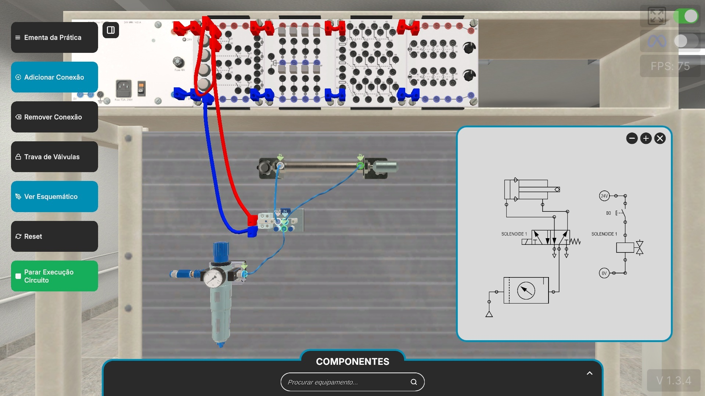
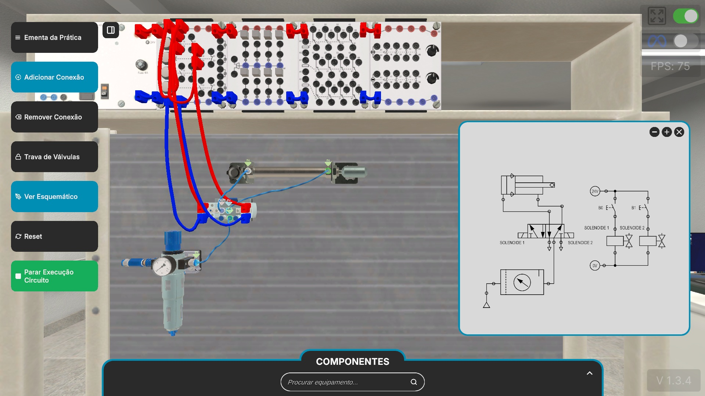

Eletropneumática - Laboratório Digital (SENAI)
Exercício 01 (Cilindro Dupla Ação - Solenoide com Retorno por Mola)

Exercício 01 (Cilindro Dupla Ação - Solenoide com Retorno por Mola)
Circuito:
Trata-se de um comando indireto eletropneumático de um cilindro de dupla ação acionado por retorno por mola. O sistema é constituído por uma unidade de conservação (FRL), uma válvula direcional 5/2 vias acionada por solenoide único (Solenóide 1) e retorno por mola, e um cilindro pneumático de dupla ação. No circuito elétrico de 24V DC, a alimentação passa por um botão de pressão (pulsador B0) normalmente aberto (NO) conectado em série com a bobina do Solenóide 1.
Simulação:
Ao iniciar a simulação, a pressão de ar mantém o cilindro recuado em sua posição de repouso. Quando o operador clica e segura o botão B0 na bancada virtual, o circuito elétrico fecha, energizando o Solenóide 1. A bobina comuta a válvula 5/2 vias, direcionando o ar comprimido para a câmara traseira do cilindro e provocando o seu avanço. Ao soltar o botão B0, o Solenóide 1 desenergiza e a mola interna reposiciona a válvula 5/2 vias, invertendo o fluxo de ar para recuar o atuador à posição inicial.
Exercício 02 (Cilindro Dupla Ação - Solenoide com Memória)

Exercício 02 (Cilindro Dupla Ação - Solenoide com Memória)
Circuito:
Apresenta o comando eletropneumático de um cilindro de dupla ação utilizando uma válvula biestável (duplo solenoide com memória). O circuito pneumático conta com a unidade FRL, a válvula 5/2 vias acionada por dois solenoides (Solenóide 1 para avanço e Solenóide 2 para recuo) e o cilindro de dupla ação. O circuito elétrico é composto por duas ramificações independentes em paralelo: o botão B0 comanda o Solenóide 1 e o botão B1 comanda o Solenóide 2.
Simulação:
Em estado inicial, o sistema pressuriza o cilindro mantendo-o recuado. Ao aplicar um pulso elétrico no botão B0, o Solenóide 1 é energizado e a válvula comuta, fazendo o cilindro avançar até o fim do curso. Devido ao elemento biestável da válvula, mesmo após soltar o botão B0 o cilindro permanece totalmente avançado. O recuo só ocorre quando o operador aciona o botão B1, energizando o Solenóide 2, que comuta a válvula de volta à posição original e recolhe o haste do cilindro.